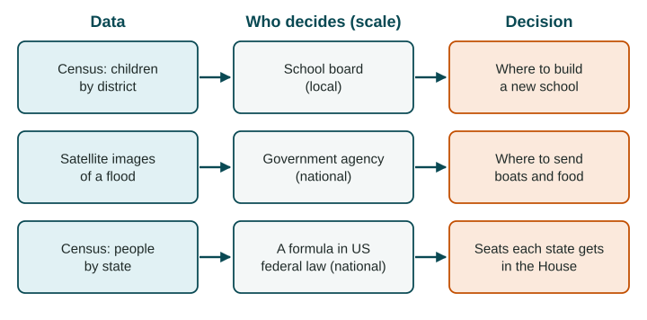

The Power of Geographic Data
Census data and satellite images are powerful because decisions follow them: where a family buys a home, where a company opens a store, where a city lays pipes, how a country shares seats and money, and where aid goes after a disaster.
Part 1 · Hook
Why this matters
Part 2 · Before you start
What this builds on
Part 3 · Prerequisite check
Quick check before you start
1. Which is quantitative data?
- The number of stalls on a street
- An interview with a stall owner
- Field notes about the smell of a market
- A traveler's diary
Show the answer
A count is a number; the others are words and experiences.
- Correct: The number of stalls on a street:
- An interview with a stall owner:
- Field notes about the smell of a market:
- A traveler's diary:
2. What does remote sensing do?
- Gathers data from a distance, usually by satellite
- Finds the exact location of a phone
- Layers data on one map
- Asks people questions in their homes
Show the answer
Remote sensing records the Earth from far away; GPS finds locations; a GIS layers data.
- Correct: Gathers data from a distance, usually by satellite:
- Finds the exact location of a phone:
- Layers data on one map:
- Asks people questions in their homes:
3. A map of one country is shaded by province. What is the scale of analysis?
- Local (subnational)
- National
- Regional
- Global
Show the answer
Each value is for a province, a part of the country.
- Correct: Local (subnational):
- National:
- Regional:
- Global:
Part 4 · See it
See it first

Part 5 · Step by step
How it works, step by step
- A government counts its people in a census, or a satellite images the grounddecision makers learn how many people live where and how places are changing
- Leaders share money, seats or services by those numbersthe data shape where schools, clinics, pipes and aid go
- The data are out of date, miss people or hide differences inside an areadecisions can send resources to the wrong places
Part 6 · Key ideas
Key ideas
- A census is an official count of all the people in a country, often every ten years, with facts about households.
- Census data and satellite images inform decisions by individuals (where to buy a house), businesses (where to open a store) and governments (where to build, how to share seats and money).
- These decisions happen at every scale: a school board (local), a national agency, a group of countries or the whole world.
- Every source has a limitation of data: censuses age and miss people; satellites cannot see through clouds or into homes; data for a whole city hide its neighborhoods.
Part 7 · Misconception
A common mistake
The wrong idea: Official data such as a census are complete and always up to date.
What actually happens: A census is taken every few years and misses some people, such as those without a fixed home. Good decisions say how old the data are and who may be missing.
Part 8 · Check yourself
Check yourself
Exam-style questions. Anything you miss goes into your review queue.
Data
Port Nova, a growing city in Country A: census and satellite data
| Year | People (census, thousands) | Built-up area (satellite, square km) | Homes with piped water (census, %) |
|---|---|---|---|
| 2000 | 200 | 40 | 70% |
| 2010 | 300 | 70 | 62% |
| 2020 | 450 | 120 | 55% |
Invented data for practice.
1. Using the table, by what percent did Port Nova's number of people grow from 2000 to 2020?
Type a number (%). No calculator needed: work it out by hand, as on the exam.
Show the answer
Percent change = (new - old) / old x 100 =
- Answer: 125 %
2. Compare the growth of Port Nova's people and its built-up area from 2000 to 2020. What does the comparison suggest?
- The area tripled while people grew by less, so the city spread out faster than it gained people
- People and built-up area grew by about the same amount, so the city kept the same shape and size
- People grew faster than the built-up area, so the city became more crowded on each square km
- The built-up area shrank while the number of people grew, so new homes were packed in tightly
Show the answer
Comparing two columns shows a relationship: land was built over faster than people arrived, a sign of outward spread.
- Correct: The area tripled while people grew by less, so the city spread out faster than it gained people: Right: 40 to 120 square km is three times as large, while 200,000 to 450,000 people is less than three times as many.
- People and built-up area grew by about the same amount, so the city kept the same shape and size: The two grew by different amounts: the area tripled, the people a bit more than doubled.
- People grew faster than the built-up area, so the city became more crowded on each square km: This reverses the data: the area grew faster than the number of people.
- The built-up area shrank while the number of people grew, so new homes were packed in tightly: The satellite figures rise from 40 to 120 square km; the area did not shrink.
3. The share of homes with piped water fell from 70% to 55%. What decision could the city water board base on this trend?
- Close parts of the water network, since fewer homes use it with each decade
- Extend pipes to new neighborhoods, where growth has outrun the network
- Stop the next census, since the trend is already known for the decades ahead
- Move people back to the older neighborhoods, which have the most pipes
Show the answer
Data inform a decision when the decision matches what the data show: here, a gap between growth and services.
- Close parts of the water network, since fewer homes use it with each decade: More homes have piped water in total; it is the share that fell, because the city grew faster than the pipes.
- Correct: Extend pipes to new neighborhoods, where growth has outrun the network: Right: the city grew fast, and a falling share suggests new homes were built beyond the existing pipes.
- Stop the next census, since the trend is already known for the decades ahead: A trend does not tell you what will happen next; new counts are needed to check it.
- Move people back to the older neighborhoods, which have the most pipes: That is not a realistic choice for a water board, and the data do not show which neighborhoods have pipes.
4. The water board wants to know which neighborhoods lack pipes. What is a limitation of this table for that task?
- It is quantitative, so it says nothing that a water board could use
- It uses satellite images, which show the land but nothing about water pipes
- It gives one value for the whole city, not one for each neighborhood
- It gives data for three years, which is too many years to compare at once
Show the answer
Data for a whole city hide differences between its neighborhoods. Say what the data leave out for the decision at hand.
- It is quantitative, so it says nothing that a water board could use: Numbers are useful; the problem is the size of the unit they describe.
- It uses satellite images, which show the land but nothing about water pipes: Satellite images measured the built-up area well; that is not the issue.
- Correct: It gives one value for the whole city, not one for each neighborhood: Right: the table describes Port Nova as a whole; the decision is about neighborhoods inside it.
- It gives data for three years, which is too many years to compare at once: Three dates show a trend, which is useful.
5. The United States counts its people every ten years. How does that count shape a national decision?
- It sets the borders between the states for the next ten years
- It decides which cities will hold the next national election for Congress
- It picks the candidates who run for president
- It sets how many seats each state gets in the House
Show the answer
Census counts are used to share seats in the House among states, a decision at the national scale.
- It sets the borders between the states for the next ten years: State borders do not change with the census.
- It decides which cities will hold the next national election for Congress: Elections are held across the country, not in chosen cities.
- It picks the candidates who run for president: Census counts do not choose candidates.
- Correct: It sets how many seats each state gets in the House: Right: House seats are shared among the states by population, using each new census.
6. India's census due in 2021 was postponed, so for years planners relied on counts from 2011. What limitation does this create?
- The data were too recent to compare with the counts from earlier decades
- The data were qualitative, so they could not be mapped
- The data were out of date, missing years of growth and movement
- The data covered the whole world, so they hid India's states
Show the answer
Census data age between counts. Old data can lead to decisions that miss where people now live.
- The data were too recent to compare with the counts from earlier decades: The problem is the opposite: the counts were old.
- The data were qualitative, so they could not be mapped: Census counts are quantitative and can be mapped by state or district.
- Correct: The data were out of date, missing years of growth and movement: Right: India's cities and states changed a lot after 2011, so old counts could misplace schools, clinics and funds.
- The data covered the whole world, so they hid India's states: A national census covers one country, not the world.
7. Some people are hard to count in a census, such as people without a fixed home or people in remote villages. What problem does this cause?
- An overcount, so the places where they live get more seats than they should
- Too much data, so planners are swamped by the results and stop using them
- No problem, because satellites fill in each missing person
- An undercount, so places with many such people may get less funding
Show the answer
Undercounts are a known limitation of census data, and they hit some places and groups harder than others.
- An overcount, so the places where they live get more seats than they should: Missing people lowers the count; it does not raise it.
- Too much data, so planners are swamped by the results and stop using them: Missing people means less data, not too much.
- No problem, because satellites fill in each missing person: Satellites can show buildings or lights, but they cannot count people the way a census does.
- Correct: An undercount, so places with many such people may get less funding: Right: an undercount means some people are missing from the numbers used to share money and seats.
Part 9 · Summary
Summary
Part 10 · Up next
What comes next
Part 11 · Connections